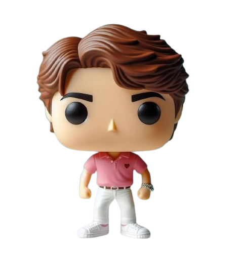

Presentacion
Una presencia digital mas personal, mas clara y con mejor criterio visual. Combino desarrollo web, estructura visual y foco comercial para crear experiencias que cuentan mejor quien eres y hacia donde quieres llevar un proyecto.
Interfaces con jerarquia clara y un look menos generico. Atencion especial a velocidad, legibilidad y experiencia de uso. Base ideal para crecer hacia demos, casos reales o un portfolio mas tecnico. web + ventas + producto 
Perfil Desarrollo con orientacion comercial Mensaje, conversion y presentacion trabajando juntos.
Lo que aporto UI con personalidad Layouts mas intencionales, menos plantilla y una presencia digital mas reconocible.
Performance visible Cuidado del peso visual, la estructura del contenido y la sensacion general de velocidad.
Mentalidad comercial No solo importa verse bien: tambien importa explicar mejor el valor y empujar a la accion.
Entrega ordenada Componentes claros, base editable y una estructura preparada para seguir creciendo contigo.
Stack y temas que me interesa potenciar Responsive UI Bootstrap JavaScript Core Web Vitals Accesibilidad GitHub Branding personal Conversion Landing pages
Metodo
Prefiero una web que comunique bien antes que una web cargada sin direccion. 1. Aterrizar el mensaje Defino propuesta de valor, tono y objetivo principal antes de decidir colores o efectos.
2. Ordenar la experiencia La jerarquia visual, el ritmo de lectura y los CTA deben sentirse naturales y faciles de seguir.
3. Construir con criterio Trabajo sobre una base limpia para que el portfolio se vea bien hoy y sea facil de iterar manana.
4. Afinar lo importante Reviso contraste, espaciado, claridad del copy y sensacion general de calidad en cada seccion.
Prioridades
Claridad, confianza y conversion Una buena primera impresion necesita orden visual, consistencia y una invitacion clara a seguir.
Base tecnica
HTML, CSS y JavaScript bien resueltos Me interesa que lo visual no comprometa el mantenimiento ni la posibilidad de escalar despues.
Idea central
Un portfolio personal no deberia parecer una demo reciclada; deberia sentirse como una tarjeta de presentacion con criterio. Portfolio
Tipos de piezas y soluciones que mejor encajan con este perfil. Estas cards resumen el tipo de trabajo que este portfolio puede representar hoy y ampliar manana con casos reales, demos o enlaces especificos.
Todo UI Performance Sistemas
Branding Portfolio
Portfolio vCard con identidad propia Una home compacta, elegante y facil de escanear para presentar perfil, propuesta de valor y CTA.
Landing Conversion
Landing orientada a accion Mensaje claro, bloques bien jerarquizados y llamadas a la accion visibles sin sacrificar estilo.
Core Web Vitals UX
Optimizacion de velocidad y lectura Reducir friccion visual y tecnica para que la experiencia se perciba mas rapida y convincente.
Datos Backoffice
Interfaces para operaciones y seguimiento Paneles sobrios y funcionales para ordenar informacion, procesos internos y puntos de control.
Accesibilidad Contenido
Experiencia mas clara y accesible Copy mejor organizado, contraste mas consciente y decisiones pensadas para reducir friccion.
Automatizacion Web
Base lista para seguir creciendo Una estructura simple y cuidada para convertir una pagina personal en algo mas completo con el tiempo.
Contacto
Si tu web necesita verse mas seria y comunicar mejor, podemos hablarlo.